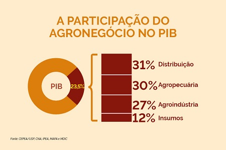
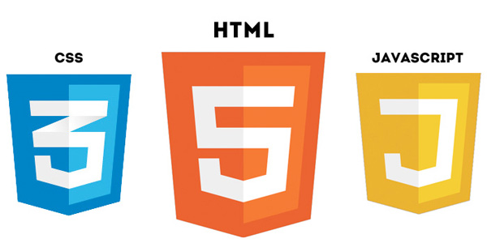

A medição precisa de variáveis em atividades de plantio é fundamental para otimizar o cultivo e garantir uma produção saudável. No entanto, enfrentar dificuldades na medição é uma realidade comum para agricultores. Fatores como condições climáticas variáveis, solo heterogêneo e a necessidade de monitorar uma série de variáveis, como temperatura, umidade do solo, luz e nutrientes, podem complicar o processo. Além disso, a escolha de sensores e equipamentos apropriados, a manutenção regular e a interpretação dos dados coletados também podem ser desafios. Superar essas dificuldades é essencial para garantir a eficiência e a qualidade da produção agrícola. Por isso criamos o Stardew para te ajuda a medir essas diferentes variaveis
Estação meteorológica focada na obtenção do perfil climático e térmico de terrenos, visando o plantio. Gerando ao agricultor gráficos e dados do perfil de vento, temperatura, pressão e umidade do solo e do ar.

ele tem a capacidade de medir os níveis de luz, a temperatura e umidade tanto do solo quanto do ar, a intensidade e força do vento e a variações da pressão atmosférica. Feito com esp32, sensor bmp280, sensor bh1750, sensor dth11, sensor de umidade do solo capacitivo, sensor de velocidade do vento utilizando encoder e sensor de direção utilizando red switch
Banco de dados não relacional em nuvem, plataforma MongoDB. O MongoDB faz facilmente a conversão de documentos JSON e similares tornando a leitura e gravação de dados no MongoDB rápida e incrivelmente eficiente durante a análise de informações em tempo real em vários ambientes de desenvolvimento.
Site feito utilizando html5 css3 e javascript hospedado no Github Pages com graficos e tabelas que mudam em tempo real utilizando o puglin chart.js para javascript. Conectado em um servidor web feiot em Nodesjs hospedado na Vercel.
